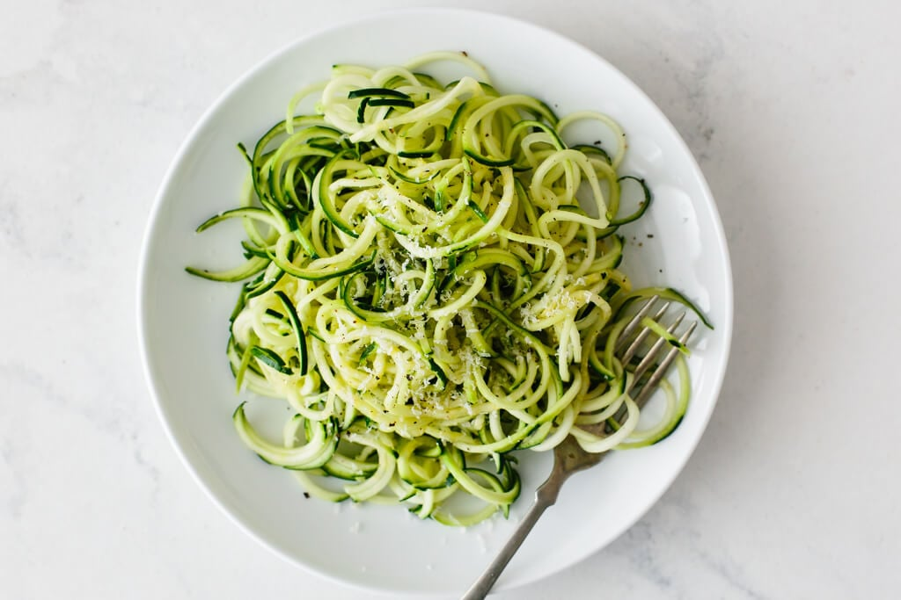

Zucchini noodles are easy to make with a spiralizer or
mandoline to created zoodles. Perfect for people on a gluten-free
diet to enjoy a noodle dish. Delious tossed in melted butter and garlic with freshly
grated parmesan cheese.
How to Make Zucchini Noodles
While you can cut zucchini into noodle-like strips using a sharp
knife, it would be tedious work. We recommend using a mandoline or,
better yet, a spiralizer. If you're short on time or patience, you can buy frozen
zucchini noodles at most grocery stores.